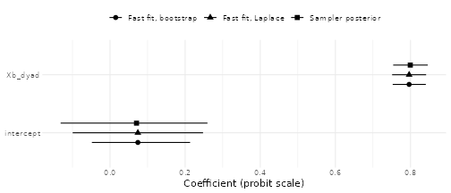

Fast (MCMC-free) AME Estimation
Cassy Dorff, Shahryar Minhas, and Tosin Salau
2026-11-22
Source:vignettes/fast_estimation.Rmd
fast_estimation.RmdWhat the fast route gives
ame() and lame() fit AME models by MCMC.
The package also fits the same model
z_ij = mu + beta’x_ij + a_i + b_j + u_i’v_j + e_ij
without sampling, in seconds:
-
ame_als()for one network, orame(..., method = "als") -
lame_als()for a panel, orlame(..., method = "als") -
ame_als_bootstrap()for bootstrap intervals
The fast fit is the empirical-Bayes estimate of the model the
samplers draw from. The sender and receiver effects and the latent
positions keep the samplers’ Gaussian priors, the variance components
are estimated from the data, and every estimate comes with a standard
error: the coefficients, the variance components, the sender and
receiver effects, and the latent positions and product. The result works
with coef(), confint(),
summary(), fitted(), predict(),
simulate(), latent_positions(),
ab_plot(), uv_plot() and
gof_plot().
Use it to compare specifications and ranks, to fit large networks, and to start a sampler at the answer.
Agreement with the sampler on the shipped data
The table sets the fast fit beside the default ame() or
lame() call on three shipped data sets, each with two
latent dimensions. The coefficient gap is the largest difference between
the two sets of coefficients, in posterior standard deviations. The
standard-error ratio divides the fast fit’s standard errors by those
posterior standard deviations. The last column is the rank correlation
of the two sets of fitted values. Times are seconds on the same
machine.
| Data | Fast fit | Sampler | Coefficient gap | SE ratio | Fitted correlation |
|---|---|---|---|---|---|
IR90s log exports, normal |
15.3 | 168.9 | 0.13 | 1.00 | 1.000 |
YX_bin_list, binary panel |
1.6 | 720.9 | 0.07 | 1.03 | 1.000 |
comtrade, normal panel with
dynamic_uv
|
15.8 | 254.4 | 0.23 | 0.88 | 0.989 |
On simulated data the picture is the same. Across 44 normal networks
(directed, symmetric and bipartite, ranks 0 to 3) the intercept was
within 0.07 and the slopes within 0.09 posterior standard deviations of
a long sampler run, with standard errors 0.97 to 1.05 times the
posterior standard deviations. Across 1,000 simulated normal panels the
95 percent intervals of the dyadic slope covered the generating value in
94.3 percent. ?ame_als reports the larger simulations.
A first fit
set.seed(1)
n <- 40
a <- rnorm(n, 0, 0.5); b <- rnorm(n, 0, 0.5)
u <- rnorm(n, 0, 0.8); v <- rnorm(n, 0, 0.8) # a rank-one latent term
Xd <- matrix(rnorm(n * n), n, n)
Y <- 0.5 + 0.8 * Xd + outer(a, b, "+") + tcrossprod(u, v) + matrix(rnorm(n * n), n, n)
diag(Y) <- NA
fit <- ame_als(Y, Xdyad = Xd, R = 1, family = "normal", verbose = FALSE)
fit
#> AME fit via iterative block coordinate descent (fast, MCMC-free)
#> Family: normal | Mode: unipartite | R = 1
#> Network: 40 x 40, 1 time slice
#> Converged: TRUE in 9 iterations
#> Estimator: empirical Bayes (exact Gaussian cell with the variance of the noise
#> by EM, Gaussian prior on the actor effects, covariance by EM, variational
#> posterior of the effects and factors, coefficients and scales by empirical
#> Bayes)
#>
#> Coefficients:
#> intercept Xd_dyad
#> 0.6096 0.7947
#>
#> Variance components:
#> Estimate Std.Error CI 2.5% CI 97.5%
#> va 0.2032 0.0521 0.1190 0.3250
#> cab 0.0337 0.0369 -0.0389 0.1160
#> vb 0.1987 0.0509 0.1164 0.3177
#> rho 0.0179 0.0372 -0.0550 0.0906
#> ve 1.0955 0.0410 1.0179 1.1789
#>
#> va/vb: variances of the sender/receiver effects | cab: their covariance | rho:
#> dyadic residual reciprocity | ve: residual variance.
#> va, cab and vb are the fitted covariance of the actor effects (the model's
#> random-effect variances). The intercept, a and b carry the grand, row and
#> column means of the latent product, as ame() reports them; fit$eb$population
#> keeps the population intercept.
#>
#> Laplace standard errors (penalised Fisher information, empirical-Bayes
#> actor-effect prior):
#> intercept Xd_dyad
#> 0.1116 0.0264
#> Posterior sds of the reported actor effects, positions and product cells (delta
#> method under the joint Laplace covariance): `fit$a_sd`, `fit$b_sd`, `fit$U_sd`,
#> `fit$V_sd`, `fit$UVPM_sd`; `latent_positions()` reports them as `posterior_sd`.The estimates and their 95 percent intervals, beside the values that generated the data:
round(cbind(truth = c(0.5, 0.8), estimate = coef(fit), confint(fit)), 3)
#> truth estimate 2.5% 97.5%
#> intercept 0.5 0.610 0.391 0.828
#> Xd_dyad 0.8 0.795 0.743 0.847
round(fit$VC, 3)
#> va cab vb rho ve
#> 0.203 0.034 0.199 0.018 1.095va and vb are the variances of the sender
and receiver effects (0.25 in the simulation), cab their
covariance, rho the dyadic correlation and ve
the noise variance (1 in the simulation).
Sparse and dense binary networks
The density of a binary network is the share of its observed cells
that are ties, with the diagonal of a one-mode network left out and the
periods of a panel pooled. Outside densities of 0.2 to 0.8 the fast
route pulls slopes toward zero, biases the intercept and gives intervals
that cover less often than stated, so a fast fit there comes with a
warning. For such networks the sampler, ame() or
lame(), is the better choice.
Choosing the rank
Each fast fit reports fit$eb$log_marginal, the Laplace
approximation to the log marginal likelihood with the effects and the
positions integrated out. Unlike the deviance, it does not improve with
every added dimension. The rank with the largest value is the one the
data support, and the difference between two ranks is an approximate log
Bayes factor. Fitting four ranks takes a few seconds:
ev <- sapply(
0:3,
function(r)
ame_als(
Y,
Xdyad = Xd,
R = r,
family = "normal",
verbose = FALSE
)$eb$log_marginal
)
data.frame(R = 0:3, log_marginal = round(ev - ev[1], 1))
#> R log_marginal
#> 1 0 0.0
#> 2 1 69.9
#> 3 2 54.5
#> 4 3 38.9The data were generated with one latent dimension, and rank 1 has the largest value. In simulation the largest value named the generating rank in every normal network with at least 8 noise variances of signal per loading (252 networks).
A fit also measures how much the data say about its latent product
(fit$eb$variational$information). When that is too little
to locate the positions well at the rank requested, the fit reports the
positions and the product shrunken toward zero, with standard errors
that carry the extra uncertainty, and prints a note suggesting a smaller
rank. Static and dynamic fits do the same.
Binary and count networks
Binary fits use the probit link and count fits the log link, so the
coefficients are on the same scale as those of ame() and
lame(). A directed fit models the dyadic correlation as the
samplers do: the two cells of a dyad are one bivariate observation and
fit$VC["rho"] is their correlation. fitted()
and predict() return probabilities for binary data and mean
counts for count data.
A count is Poisson(exp(z)), with z the
linear predictor plus normal noise of variance ve, which
the fit estimates. Because the actor effects have a prior, an actor with
no counts keeps a finite effect. In this network one actor sends nothing
and another receives nothing:
set.seed(4)
nc <- 30
xc <- matrix(rnorm(nc * nc), nc, nc)
ac <- rnorm(nc, 0, 0.7); bc <- rnorm(nc, 0, 0.7)
Yc <- matrix(
rpois(
nc * nc,
exp(
-0.3 + 0.5 * xc + outer(ac, bc, "+") +
rnorm(nc * nc, 0, 0.6)
)
),
nc,
nc
)
# one actor sends no counts and another receives none
Yc[2, ] <- 0; Yc[, 5] <- 0
diag(Yc) <- NA
fc <- ame_als(Yc, Xdyad = xc, R = 0, family = "poisson", verbose = FALSE)
round(cbind(estimate = coef(fc), confint(fc)), 3)
#> estimate 2.5% 97.5%
#> intercept -0.637 -1.159 -0.116
#> xc_dyad 0.433 0.336 0.530
round(c(ve = fc$VC[["ve"]], sender_2 = fc$a[[2]], receiver_5 = fc$b[[5]]), 2)
#> ve sender_2 receiver_5
#> 0.38 -2.24 -2.39The slope was generated as 0.5 and the noise variance as 0.36. The two silent actors get large negative effects, shrunk toward the rest of the network as in the sampler.
A binary network of 80 actors with a density of 0.52, used in the next two sections:
set.seed(2)
nb <- 80
ab <- rnorm(nb, 0, 0.5); bb <- rnorm(nb, 0, 0.5)
Xb <- matrix(rnorm(nb * nb), nb, nb)
Yb <- 1 * (0.8 * Xb + outer(ab, bb, "+") + matrix(rnorm(nb * nb), nb, nb) > 0)
diag(Yb) <- NA
fb <- ame_als(Yb, Xdyad = Xb, R = 0, family = "binary", verbose = FALSE)
round(cbind(truth = c(0, 0.8), estimate = coef(fb), confint(fb)), 3)
#> truth estimate 2.5% 97.5%
#> intercept 0.0 0.074 -0.099 0.248
#> Xb_dyad 0.8 0.796 0.751 0.842Uncertainty
vcov(), confint() and
summary() of a fast fit use Laplace standard errors: the
inverse information of all the parameters at the fit, with the
uncertainty in the scale of the latent positions included. They cover
every coefficient, sender and receiver covariates included, and need no
refitting. The same fit carries standard errors for the variance
components (fit$VC_se, shown by summary()),
the sender and receiver effects (fit$a_sd,
fit$b_sd) and the latent positions and product cells
(fit$U_sd, fit$V_sd, fit$UVPM_sd,
and posterior_sd in latent_positions()).
ame_als_bootstrap() gives bootstrap intervals instead.
It simulates networks from the fitted model and refits each one; a
quantity the replicates cannot give an error for keeps its analytic one,
and the summary names it:
bt <- ame_als_bootstrap(
fb,
R = 30,
type = "parametric",
seed = 1,
verbose = FALSE
)
summary(bt)
#>
#> ── Bootstrap results: fast AME estimator ───────────────────────────────────────
#> Type: parametric | Family: binary | Mode: unipartite
#> Replicates: 30 valid of 30 (100%); every one converged
#> Optimum check of each replicate: none: an empirical-Bayes refit starts from the
#> variational state of the fit
#> Network: 80 x 80, 1 time slice, R = 0
#> ────────────────────────────────────────────────────────────────────────────────
#> Regression coefficients
#> Estimate Boot SE 2.5% 97.5% sig
#> intercept 0.0741 0.0803 -0.0483 0.2132
#> Xb_dyad 0.7963 0.0264 0.7526 0.8407 *
#> * = 95% percentile CI excludes zero
#> ────────────────────────────────────────────────────────────────────────────────
#> Variance components
#> Estimate Boot SE 2.5% 97.5%
#> va 0.3337 0.0509 0.2294 0.4015
#> cab -0.0329 0.0442 -0.1419 0.0262
#> vb 0.3308 0.0663 0.2084 0.4269
#> rho -0.0263 0.0431 -0.0971 0.0657
#> ────────────────────────────────────────────────────────────────────────────────
#> Additive effects (rotation-invariant, aggregated directly)
#> Sender a: mean |SE| = 0.5366
#> Receiver b: mean |SE| = 0.5407Every replicate behind these intervals converged, and the summary
says so. The ve row is constant because the probit scale
fixes the noise variance at 1. Thirty replicates keep this example
short; use 200 or more for intervals to report.
bootstrap = N in the fitting call does both steps at once,
and type = "block" resamples the periods of a panel of ten
or more (a shorter panel runs the parametric scheme, with a message). A
dynamic fit keeps its own standard errors, and
bootstrap = N there leaves it with them.
From a fast fit to a posterior
als_start_vals() turns a fast fit into starting values
for the sampler, so the chains begin where the fast fit ended:
fit_mcmc <- ame(
Yb,
Xdyad = Xb,
family = "binary",
R = 0,
start_vals = als_start_vals(fb),
burn = 200,
nscan = 1000,
odens = 5,
verbose = FALSE,
plot = FALSE,
gof = FALSE,
seed = 1
)
# estimates and 95 percent intervals from the three sources
terms <- names(coef(fb))
cmp <- rbind(
data.frame(
estimator = "Fast fit, Laplace",
term = terms,
estimate = unname(coef(fb)),
lower = confint(fb)[terms, 1],
upper = confint(fb)[terms, 2]
),
data.frame(
estimator = "Fast fit, bootstrap",
term = terms,
estimate = unname(coef(fb)),
lower = confint(bt)[terms, 1],
upper = confint(bt)[terms, 2]
),
data.frame(
estimator = "Sampler posterior",
term = terms,
estimate = unname(coef(fit_mcmc)[terms]),
lower = confint(fit_mcmc)[terms, 1],
upper = confint(fit_mcmc)[terms, 2]
)
)
rownames(cmp) <- NULL
cbind(cmp[, 1:2], round(cmp[, 3:5], 3))
#> estimator term estimate lower upper
#> 1 Fast fit, Laplace intercept 0.074 -0.099 0.248
#> 2 Fast fit, Laplace Xb_dyad 0.796 0.751 0.842
#> 3 Fast fit, bootstrap intercept 0.074 -0.048 0.213
#> 4 Fast fit, bootstrap Xb_dyad 0.796 0.753 0.841
#> 5 Sampler posterior intercept 0.071 -0.131 0.259
#> 6 Sampler posterior Xb_dyad 0.799 0.754 0.846
library(ggplot2)
ggplot(
cmp,
aes(
x = estimate,
y = term,
shape = estimator
)
) +
geom_pointrange(
aes(xmin = lower, xmax = upper),
position = position_dodge(width = 0.5),
size = 0.5
) +
labs(
x = "Coefficient (probit scale)",
y = NULL,
shape = NULL
) +
theme_bw() +
theme(
panel.border = element_blank(),
axis.line = element_blank(),
axis.ticks = element_blank(),
legend.position = "top"
)
The three intervals for each coefficient nearly coincide, and each contains the value that generated the data (0 for the intercept, 0.8 for the slope).
Panels and dynamic effects
lame_als() fits a panel with effects and positions
shared across the periods, as a lame() fit without dynamic
options does. This is the second row of the first table, a panel with a
density of 0.51:
data(YX_bin_list)
Yl <- lapply(YX_bin_list$Y, function(y) 1 * (y > 0))
lf <- lame_als(Yl, Xdyad = YX_bin_list$X, R = 2, family = "binary", verbose = FALSE)
round(cbind(estimate = coef(lf), confint(lf)), 3)
#> estimate 2.5% 97.5%
#> intercept 0.118 0.060 0.175
#> dyad1_dyad 0.754 0.714 0.795
#> dyad2_dyad 0.913 0.866 0.959
#> dyad3_dyad 1.136 1.080 1.192lame(..., method = "als") takes the dynamic options of
the sampler: dynamic_ab for sender and receiver effects
that move over time, dynamic_beta for coefficients that
move, and dynamic_uv for positions that move. The effects
follow the AR(1) process of lame(). The fit sets its
persistence and innovation scale from the data as smoothing settings,
kept on the fit for prediction; the sampler estimates the persistence
with an interval. Here the sender and receiver effects of 30 actors move
over 8 periods with persistence 0.7 and innovation scale 0.3:
set.seed(7)
nn <- 30; Tn <- 8
nmn <- paste0("a", sprintf("%02d", 1:nn))
# an actor level plus an AR(1) deviation in each period
ar1_paths <- function() {
level <- rnorm(nn, 0, 0.6)
dev <- matrix(0, nn, Tn)
dev[, 1] <- rnorm(nn, 0, 0.3 / sqrt(1 - 0.7^2))
for (t in 2:Tn) dev[, t] <- 0.7 * dev[, t - 1] + rnorm(nn, 0, 0.3)
level + dev
}
an <- ar1_paths(); bn <- ar1_paths()
xn <- lapply(
seq_len(Tn),
function(t)
array(rnorm(nn * nn), c(nn, nn, 1), dimnames = list(nmn, nmn, "x"))
)
Yn <- lapply(seq_len(Tn), function(t) {
m <- 0.3 + 0.7 * xn[[t]][, , 1] + outer(an[, t], bn[, t], "+") +
matrix(rnorm(nn * nn, 0, 0.8), nn)
diag(m) <- NA
dimnames(m) <- list(nmn, nmn)
m
})
fn <- lame(
Yn,
Xdyad = xn,
family = "normal",
method = "als",
dynamic_ab = TRUE,
verbose = FALSE
)
round(confint(fn)["x_dyad", ], 3)
#> 2.5% 97.5%
#> 0.679 0.717
round(c(ve = fn$VC[["ve"]]), 2)
#> ve
#> 0.65
# estimated sender and receiver paths against the generating ones
round(c(sender = cor(c(fn$a_dynamic), c(an)), receiver = cor(c(fn$b_dynamic), c(bn))), 3)
#> sender receiver
#> 0.981 0.985The interval of the slope contains 0.7, the noise variance is close
to 0.64, and the estimated paths follow the generating ones. Binary and
count panels take the same call, and a panel whose actors enter and
leave is aligned by actor name. On the shipped comtrade
panels (30 countries, 10 years) the 18 dynamic fits tried, with moving
effects and moving positions, took 9.5 to 23 seconds each.
What each route covers
| Fast route | Sampler | |
|---|---|---|
| Families | normal, binary, poisson | normal, binary, poisson, ordinal, cbin, frn |
| Networks | directed, symmetric, bipartite | directed, symmetric, bipartite |
| Covariates |
Xdyad, Xrow, Xcol
|
Xdyad, Xrow, Xcol
|
| Binary density | any; a warning outside 0.2 to 0.8 | any |
| Latent rank | any R, compared by
fit$eb$log_marginal
|
any R
|
| Dynamic effects |
dynamic_ab, dynamic_beta,
dynamic_uv ("ar1", "t") |
dynamic_ab, dynamic_beta,
dynamic_uv ("ar1", "t",
"snap") |
| Uncertainty | Laplace standard errors for every estimate; optional bootstrap for static fits | posterior draws |
| Fit checks |
gof_plot() by simulation from the fit |
posterior predictive gof_plot(),
custom_gof, trace_plot()
|
| Methods |
coef, vcov, confint,
summary, fitted, residuals,
predict, simulate,
latent_positions, ab_plot,
uv_plot
|
the same |
ame(..., method = "als") and
lame(..., method = "als") take the call you would give the
sampler. Arguments that only a sampler uses, such as nscan,
burn, odens and chains, are named
in a warning and ignored. ?ame_als and
?lame_als document each estimator and the simulations
behind the numbers on this page.